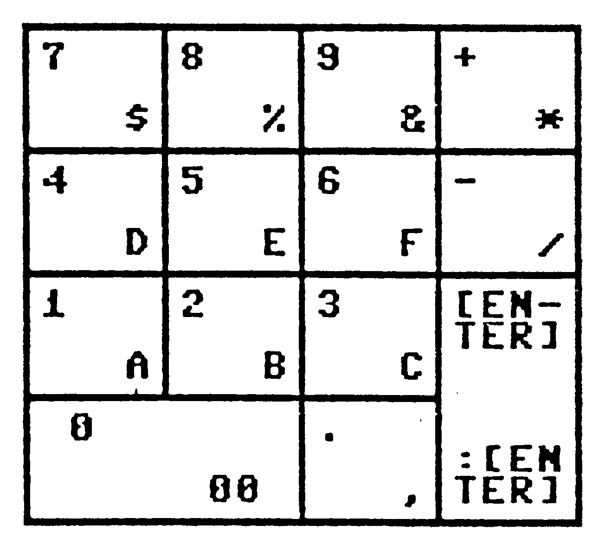

Tips, Tricks, PEEKs und POKEs zum C 128
Eine wahre Fundgrube für jeden C 128-Anwender. Hier finden Sie interessante Listings und Informationen, die Ihnen helfen werden, Ihren C 128 besser auszunutzen und kennenzulernen.
Eine wahre Fundgrube für jeden C 128-Anwender und -Programmierer haben wir für Sie zusammengestellt. Tips & Tricks-Listings, PEEKs, POKEs und jede Menge Hintergrundinformationen, um Ihnen das Arbeiten mit Ihrem Computersystem zu erleichtern.
Datagenerator C 128
Da der Monitor des C 128 im Vergleich mit dem SMON keine Möglichkeit besitzt, Maschinenprogramme in DATA-Zeilen zu verwandeln, mußte der gequälte C 128-Besitzer immer zwischen C 64- und C 128-Modus wechseln, nur um eine kleine Routine in Basic-Zeilen abgelegt zu bekommen.
Mit diesem Datagenerator (Listing 1, bitte mit dem neuen Checksummer 128 eingeben) können bequem alle Maschinensprache-Routinen in Basic-Zeilen übernommen werden.
Das Programm verlangt von Ihnen die Eingabe der Start- und Endadresse des zu wandelnden Bereiches. Diese kann sowohl dezimal oder auch, mit vorangestelltem »$«-Zeichen, hexadezimal erfolgen. Zu beachten ist nur, daß die Hex-Zahl vierstellig sein muß.
Haben Sie die beiden Adressen eingegeben, müssen Sie dem Computer noch die Startzeilennummer der DATA-Zeilen und deren Schrittweite mitteilen. Danach wird der Bildschirm gelöscht und die Einleseschleife übernommen. Wiederum löscht sich der Bildschirm und aus dem angegebenen Bereich werden die Werte in DATA-Zeilen abgelegt, und zwar in hexadezimaler Form. Dadurch sind die erzeugten Zeilen nicht nur schön untereinander formatiert, sondern ersparen den späteren Benutzern auch noch ein Drittel Tipparbeit. Letztendlich löscht sich der Datagenerator per DELETE -40 noch selbst, so daß nun beim LISTen ein speicherfertiges Programm auf dem Bildschirm steht.
Das Programm »Tasten-Piep« (Listing 2) zeigt, wie ein durch »Datagen 128« bearbeitetes Programm aussieht. Die ersten vier Zeilen zeigen die vom Programm erzeugte Einleseschleife, danach folgen die formatierten DATA-Zeilen. Übrigens können Sie dieses kleine Programm ruhig abtippen, denn einen Piepston auf Tastendruck kann man immer gebrauchen, vor allem dann, wenn man mehr oder weniger blind DATA-Zeilen eintippt.
Wichtiger Hinweis:
Sollten Sie das Programm RENUMBERn, müssen Sie auch in den Zeilen 22, 36 und 40 die Werte entsprechend ändern, da der RENUMBER-Befehl GOTO und DELETE innerhalb einer PRINT-Zeile nicht ändert.
(Torsten Fahle/dm)Punkt-Komma-Tausch
Mit diesem kurzen Programm (Listing 3, bitte mit dem neuen Checksummer 128 eingeben) läßt sich der Dezimalpunkt auf der Zehnertastatur durch ein Komma ersetzen. Dies ist sehr hilfreich, falls lange DATA-Kolonnen mittels der Zehnertastatur eingetippt werden müssen.
Der Dezimalpunkt wird nur im ASCII-Modus mit dem Komma belegt. Es ist aber trotzdem möglich, den deutschen Zeichensatz zu nutzen, wenn man wie folgt vorgeht:
Den C 128 ausschalten, auf DIN umstellen, das Programm laden und starten. Nach kurzer Zeit wird man aufgefordert, die Taste F8 zu betätigen.
Nun kann damit begonnen werden, Listings einzugeben. Will man nun den Dezimalpunkt als Komma benutzen, was ja meist in DATA-Zeilen der Fall ist (da hier ja sowieso keine deutschen Umlaute benötigt werden), schaltet man auf ASCII-Zeichensatz um und hat nun das Komma zur Verfügung. Soll wieder Text eingegeben werden, wählt man wieder den DIN-Zeichensatz. Der Dezimalpunkt auf der Zehnertastatur ist nun wieder Dezimalpunkt, kann aber durch erneutes Umschalten auf ASCII wieder als Komma genutzt werden.
Soll nur im ASCII-Modus gearbeitet werden, ist das ganze wesentlich weniger kompliziert. Einfach Programm laden und starten!
Vor dem Speichern eines so eingegebenen Programmes sollte erst einmal <RUN/STOP-RESTORE> betätigt werden, um den Ursprungszustand wieder herzustellen.
Programmbeschreibung
In Zeile 85 bis 105 werden die für das Programm notwendigen Adressen definiert. Die nun folgende FOR..NEXT-Schleife erstellt im RAM ab Adresse $1B00 die später benötigte Normaltabelle des ASCII-Codes, da sie dort einfach zu manipulieren ist. Diese Tabelle ist im Commodore-Handbuch des C 128 in Anhang J sehr gut versteckt.
In Zeile 125 wird bei Adresse $0AC5 das siebte Bit gesetzt. Dies bewirkt, daß das High-Byte bei Adresse $033F immer mit dem gesetzten Modus (ASCII oder DIN) übereinstimmt, da die Adresse $033F andernfalls neu gesetzt würde.
Die Zeilen 130 bis 135 setzen nun noch die Adreßzeiger, und zwar $033E auf 0 und $033F auf 27.
Zeile 140 ist eigentlich der komplizierteste Teil. Hier findet der eigentliche Tausch der Tastaturbelegung statt. Sie erhalten nun die Methode gezeigt, mit der sich Tasten nahezu beliebig umbelegen lassen. Es folgt nun eine genaue Erklärung des S. Kohlitz-Tasttausch-Systems:
Man hat durch die FOR..NEXT-Schleife einen ASCII-Zeichensatz im RAM, der bei Adresse 6912 ($1B00) beginnt. Will man nun eine Taste umbelegen, so addiert man zu dem Wert 6912 zuerst den Platz-Code aus der Tastaturtabelle des zu ändernden Zeichens minus 1 (im Falle des Dezimalpunktes also 83-1). Warum denn minus 1? Ganz einfach: Die Platzcodes sind von 1 bis 89 fortlaufend durchnumeriert. Um aber sinnvoll damit arbeiten zu können, sollten sie von 0 bis 88 numeriert sein. Man sagt ja auch acht Bit, die aber von 0 bis 7 durchnumeriert sind.
Wir haben nun den Wert 6912+82 errechnet, also 6994. In diese Speicherstelle POKEt man nun nur noch den Code (nicht den Platzcode) des Zeichens, mit der die Taste belegt werden soll (im Falle des Kommas also eine 44). POKE 6994,44 und der Tausch ist perfekt.
Wollen Sie jetzt noch weitere Tasten umbelegen (wie wäre es mit SHIFT anstatt der Minus- oder Plus-Taste, um die Funktionstasten von der Zehnertastatur leichter zu erreichen?), so dürften der Ausführung keine Probleme mehr im Wege stehen.
(Stephan Kohlitz/dm)Get mit Cursor
Bei allen Commodore-Computern konnte man mit drei kleinen POKEs den Cursor beim GET-Befehl ein- und ausschalten. Beim C 128 geht es im Prinzip auch, nur nicht im 80-Zeichen-Modus. Doch nichts ist unmöglich.
Im 80-Zeichen-Modus kann man dem VDC (Videocontroller) ein Zeichen mit einem »Blink-Attribut« versehen übergeben. Wie man anhand des Programms (Listing 4, bitte mit dem neuen Checksummer 128 eingeben) ausprobieren kann, blinkt der Cursor jetzt bei der GET-Routine, egal, ob im 40- oder 80-Zeichen-Modus.
Das Programmsegment für den 80-Zeichen-Modus dürfte durch die reichlichen Kommentare verständlich sein. Beim 40-Zeichen-Modus sind folgende zwei angesprochenen Speicherstellen von Interesse:
2599 $0A27 BLNSW Schalter für den Cursor (204 beim C 64); 0 = Ein/1 = Aus
2600 $0A28 BLNCT Zähler für Cursorblinken (205 beim C 64)
Den Cursorblinkzähler sollte man nach dem Holen eines Zeichens auf 1 stellen, da sonst hin und wieder ein inverser Block irgendwo auf dem Bildschirm stehenbleibt.
(Michael Bauer/dm)Bildschirme verwalten
Dieses Programm macht es möglich, bis zu drei Bildschirme gleichzeitig im 80-Zeichen-Modus zu verwalten. Die einzelnen Bildschirme können nach dem Starten des Basic-Laders mit SYS 2883, Sichtbar, Bildschirmnummer, Attribut aufgerufen werden. Dabei haben die Parameter folgende Bedeutung:
— Sichtbar: Sichtbar kann zwei verschiedene Werte annehmen.
Wert 0: Der vorherige Bildschirm wird angezeigt. Die Befehle PRINT und CHAR schreiben aber schon auf den neuen Bildschirm. Dadurch kann ein Bildschirm aufgebaut werden, während ein anderer angezeigt wird.
Wert 1: Der angewählte Bildschirm wird auch tatsächlich angezeigt.
— Bildschirm: Es stehen die Bildschirme 1 bis 5 zur Verfügung. Bitte lassen Sie sich nicht verwirren, die Bildschirme 1 und 3 sind die gleichen.
— Attribut: Auch für das Attribut gibt es zwei Werte:
Wert 0: Attribut wird ausgeschaltet. Das heißt, auf dem Bildschirm sind keine Farben, blinkende und unterstrichene Zeichen mehr sichtbar. Außerdem werden alle Zeichen im Grafikmodus angezeigt. Das alles gilt auch, wenn Sie den Bildschirm nicht sichtbar einschalten. Beim Beschreiben des Bildschirms wird aber auch das abgeschaltete Attribut-RAM beschrieben. Diese Funktion (Attribut aus) ist für die Bildschirme 3, 4 und 5 gedacht, für die nur ein Attribut-RAM zur Verfügung steht.
Wert 1: Attribut wird eingeschaltet.
Insgesamt können fünf Bildschirme erzeugt werden. Die verschiedenen Bildschirme werden durch Verschiebung des Video-RAMs (in ihm stehen die Bildschirmcodes der Zeichen, die auf dem Bildschirm sichtbar sind), und durch Verschieben beziehungsweise Abschalten des Attribut-RAMs (in ihm werden die Farben und alternativen Darstellungen eines Zeichens eingetragen) des VDC-RAM (der VDC besitzt ein eigenes, 16 KByte großes RAM) realisiert.
Dabei stehen folgende Bildschirme zur Verfügung:
| Bildschirm 1 | Video-RAM von $0000 bis $0800, Attribut-RAM von $0800 bis $1600 |
| Bildschirm 2 | Video-RAM von $1600 bis $2400, Attribut-RAM von $2400 bis $3200 |
| Bildschirm 3 | Video-RAM von $0000 bis $0800, Attribut-RAM von $0800 bis $1600 |
| Bildschirm 4 | Video-RAM von $1600 bis $2400, Attribut-RAM von $0800 bis $1600 |
| Bildschirm 5 | Video-RAM von $2400 bis $3200, Attribut-RAM von $0800 bis $1600 |
Daraus ergibt sich die folgende Aufteilung: Bildschirm 1 und 2 oder Bildschirm 3, 4 und 5 können zusammen benutzt werden, ohne daß Verluste des Bildschirminhalts auftreten. Bei den Bildschirmen 3, 4 und 5 wird dasselbe Attribut-RAM benutzt. Für eben diese Schirme steht dann jedoch nur ein Attribut-RAM zur Verfügung.
Eingabehinweise
Das Programm (Listing 5) geben Sie bitte mit dem neuen Checksummer 128 ein und speichern es. Das Programm starten Sie durch RUN. Das zweite Programm (Listing 6) ist ein Demo-Programm, das nicht unbedingt abgetippt werden muß.
Der Befehl SYS DEC ("C07B") im Basic-Lader ist nötig, um den Bildschirm zu initialisieren. Wird dieser Befehl nicht ausgeführt, so kann es geschehen, daß sich der Computer nach dem Wechsel eines Bildschirms nicht mehr meldet. Dann müssen Sie das Programm mit RUN/STOP-RESTORE unterbrechen.
(Christoph Franzen/dm)Programme verbinden (MERGE)
Mit diesem Programm (Listing 7, bitte mit dem neuen Checksummer 128 eingeben) lassen sich mehrere Programme zu einem einzigen verbinden.
Das Programm »Merge« ist so geschrieben, daß es an einen freien Speicherplatz gesetzt und aufgerufen werden kann. Um das Programm an eine andere Adresse zu verschieben, muß im Basic-Lader in Zeile 30 die Variable »AN« geändert werden.
Die Bedienung der Routine:
1) Reset-Taster am Computer betätigen beziehungsweise Computer aus- und einschalten. Das ist wichtig, um sicherzugehen, daß der Basic-Start wirklich bei $1C00 beginnt.
2) Programm MERGE laden und starten. Bitte schreiben Sie sich die Adressen der SYS-Befehle auf.
3) Laden Sie Ihr Programm, das Sie mit einem anderen verbinden wollen, und bringen Sie das Programm eventuell durch RENUMBER in einen vernünftigen Zeilennummernbereich. Schreiben Sie sich bitte die höchste Zeilennummer des ersten Programmes auf.
4) Verschieben Sie den Basic-Start (SYS 2816).
5) Laden Sie das nächste Programm und bringen auch dieses durch RENUMBER in einen vernünftigen Zeilennummernbereich (die Zeilennummern des zweiten Programms müssen höher als die des ersten sein).
6) Verbinden Sie die Programme (SYS 2838).
7) Nun können Sie das neue Programm speichern.
Nach dem Verschieben des Basic-Starts sind alle Befehle erlaubt. Das heißt, Sie können die geladenen Programme mittels DELETE, RENUMBER oder sonstigen Befehlen verändern.
(Christoph Franzen/dm)Bankswitching in Assembler
Durch das Bankswitching wird die Assemblerprogrammierung oft sehr aufwendig und mühselig. Wer schon einmal versucht hat, aus BANK 1 in eine Kernel-Routine in BANK 15 zu springen, wunderte sich sicher, denn danach befand sich der Computer in einem (sehr) undefinierten Zustand.
Um diesem Problem zu begegnen, müßte ein Programm her, das vor Aufruf die gewünschte Konfiguration einschaltet und bei der Rückkehr die alte Speicherbelegung wiederherstellt.
Das Programm müßte zusätzlich in der Common-Area (jenem Speicherbereich, der für alle BANKs gleich ist) funktionieren. Es bietet sich der RS 232-Eingabepuffer von $C00 bis $D00 an.
Das Programm »Kernel« (Listing 8), das in diesem Bereich liegt, funktioniert so:
1) Die Nummer der Kernel-Routine wird in 996 gespeichert (die Nummern entnehmen Sie bitte Tabelle 1)
2) Akku, X- und Y-Register so mit ihren Werten laden, als würde direkt in die gewünschte Kernel-Routine verzweigt
3) JSR $C00
| Name | Nummer | Adresse | Funktion |
|---|---|---|---|
| FSTMODE | 01 | $ff47 | Fastimpuls an Bus |
| EAINIT | 02 | $ff4a | Standard E/A-Geräte setzen |
| C64MODE | 03 | $ff4d | Aktivierung des 64’er-Modus |
| DMA-CALL | 04 | $ff50 | Externe RAM-Bausteine initialisieren |
| BOOT-CALL | 05 | $ff53 | Booten der Diskette |
| PHOENIX | 06 | $ff56 | Kaltstart |
| LKUPLA | 07 | $ff59 | Suche nach logischer Filenummer |
| LKUPSA | 08 | $ff5c | Suche nach Sekundäradresse |
| SWAPPER | 09 | $ff5f | Umschalter zwischen 40 und 80 Zeichen |
| DLCHR | 10 | $ff62 | Kopiert Zeichensatz ins VDC-RAM |
| PFKEY | 11 | $ff65 | F-Tastenbelegung |
| SETBANK | 12 | $ff68 | Speicherbank für LOAD/SAVE definieren |
| GETCONF | 13 | $ff6b | Holt Konfigurationsbyte |
| JSRFAR | 14 | $ff6e | JSR in beliebige Bank |
| JMPFAR | 15 | $ff71 | JMP in beliebige Bank |
| FETCH | 16 | $ff74 | LDA ( ),Y aus beliebiger Bank |
| STASH | 17 | $ff77 | STA ( ),Y in beliebiger Bank |
| COMPARE | 18 | $ff7a | CMP ( ),Y in beliebiger Bank |
| PRIMM | 19 | $ff7d | Textausgabe |
| CINT | 20 | $ff81 | Editor-Initialisierung |
| IOINIT | 21 | $ff84 | Ein-/Ausgabe-Initialiesierung |
| RAMTAS | 22 | $ff87 | Warmstart |
| RESTOR | 23 | $ff8a | Systemvektoren initialisieren |
| VECTOR | 24 | $ff8d | Systemvektoren kopieren |
| SETMSG | 25 | $ff90 | Systemmeldungen ermöglichen/verhindern |
| SECND | 26 | $ff93 | Sekundäradresse nach LISTn |
| TKSA | 27 | $ff96 | Sekundäradresse nach TALK |
| MEMTOP | 28 | $ff99 | Lesen/setzen der Speicherobergrenze |
| MEMBOT | 29 | $ff9c | Lesen/setzen der Speicheruntergrenze |
| KEY | 30 | $ff9f | Tastaturabfrage |
| SETTMO | 31 | $ffa2 | Setzen des Timeoutflags für IEEE |
| ACPTR | 32 | $ffa5 | Holt Byte vom Bus |
| CIOUT | 33 | $ffa8 | Legt Byte auf Bus |
| UNTLK | 34 | $ffab | Untalk an Bus senden |
| UNLSN | 35 | $ffae | Unlisten an Bus senden |
| LISTN | 36 | $ffb1 | Listen an Bus senden |
| TALK | 37 | $ffb4 | Talk an Bus senden |
| READST | 38 | $ffb7 | Statusbyte lesen |
| SETLFS | 39 | $ffba | Setzen der Fileparameter |
| SETNAM | 40 | $ffbd | Setzen des Filenamens |
| OPEN | 41 | $ffc0 | Datei öffnen |
| CLOSE | 42 | $ffc3 | Datei schließen |
| CHKIN | 43 | $ffc6 | Datei ist Eingabedatei |
| CKOUT | 44 | $ffc9 | Datei ist Ausgabedatei |
| CLRCH | 45 | $ffcc | Ein-/Ausgabekanäle schließen |
| BASIN | 46 | $ffcf | Zeicheneingabe |
| BSOUT | 47 | $ffd2 | Zeichenausgabe |
| LOAD | 48 | $ffd5 | Laden einer Datei |
| SAVE | 49 | $ffd8 | Speichern einer Datei |
| SETTIM | 50 | $ffdb | Setzen der internen Uhr |
| RDTIM | 51 | $ffde | Lesen der internen Uhr |
| STOP | 52 | $ffe1 | Stop-Tasten-Abfrage |
| GETIN | 53 | $ffe4 | Holt Zeichen aus Tastaturpuffer |
| CLALL | 54 | $ffe7 | Schließen aller Dateien |
| UDTIM | 55 | $ffea | Interne Uhr hochzählen |
| SCRORG | 56 | $ffed | Fenstergröße feststellen |
| PLOT | 57 | $fff0 | Cursorposition holen/setzen |
| IOBASE | 58 | $fff3 | Holt die Basisadresse des I/O-Bereiches |
Manchmal kommt es auch vor, daß ein Unterprogramm im Basic-ROM von $F4000 bis $FAFFF oder im Monitor von $FB000 bis FBFFF aufgerufen werden soll. Solch ein Problem ist mit JSRFAR zu lösen:
1) Die anzuspringende BANK ist in $02 abzulegen
2) Die anzuspringende Adresse ist im High-/Low-Format in $03/$04 bereitzustellen
3) Akku in $06, X-Register in $07 und Y-Register in $08
4) JSR $C23
Soll kein Unterprogrammaufruf, sondern ein normaler Sprung stattfinden, so ist Punkt 4 durch JMP $CD0 zu ersetzen.
Diese seltsame Art der Parameterübergabe entspricht den original JMP- und JSRFAR-Routinen. Es dürfte also keine großen Probleme bei der Umrüstung bereits bestehender Programme geben.
»Kernel 128« muß vor dem Start noch initialisiert werden. Dies erfolgt durch JSR $C3E. Findet der Interpreter während der Ausführung eines Basic-Programms eine USR(X)-Anweisung, so wird nach $0F000 gesprungen.
(Frank Probst/dm)Boot-Sektoren selbst erstellen
Die Wirkung eines Boot-Sektors kennt wohl jeder Besitzer eines C 128. Doch eine Diskette mit diesem Boot-Sektor (Listing 9) versehen, ist dagegen ganz etwas anderes.
Selbst mit dem »Auto-Boot-Creater« von der Test-Demo-Diskette kann leider nur ein Boot-Sektor mit Autostart für ein Maschinen- oder ein Basic-Programm erzeugt werden.
Oder man studiert die entsprechenden Kapitel in den entsprechenden Fachbüchern, und schreibt den Boot-Sektor mit Floppy-Befehlen oder einem Disketten-Monitor (Wer hat den schon für den C 128?) auf die Diskette. Aber versuchen Sie dann einmal, das so geladene Basic-Programm im Speicher zu verändern! Oder lieber nicht, denn absolut geladene Basic-Programme lassen sich nicht mehr editieren. Doch das steht ja schon im »Commodore-128-Handbuch« von Markt & Technik.
Doch Gott sei Dank gibt es noch vernünftige Boot-Maker wie den hier vorgestellten.
Hiermit lassen sich leicht und locker 17 (in Worten: siebzehn) verschiedene Boot-Kombinationen erstellen!
Zunächst einmal kann man frei wählbaren Text während des Ladens auf den Bildschirm geben. Hierbei sind sogar Steuerzeichen möglich. Oder man gibt schlicht den Namen des Programms ein, das gerade geladen wird.
Das zu ladende Programm kann mit oder ohne Autostart sein. Natürlich kann man auch nur einen Begrüßungstext auf den Bildschirm ausgeben. Oder nur ein Maschinen- oder Basic-Programm laden.
Aus den drei Grundeinstellungen
| 1) Text | nein / | ja |
| 2) Masch.Prg. | nein / | ja, mit Autostart ja, ohne Autostart |
| 3) Basic-Prg. | nein / | ja, mit Autostart ja, ohne Autostart |
ergeben sich die oben genannten 17 Boot-Versionen.
»Boot-Sektor« wurde auf einem 80-Zeichen-Montior erstellt, aber auch auf einem 40-Zeichen-Monitor bleibt die Übersichtlichkeit erhalten. Hierfür wird vom Programm automatisch festgestellt, welcher der Bildschirme gerade eingeschaltet ist.
Selbstverständlich läuft das Programm nicht nur mit den Floppy-Laufwerken 1570/1571, sondern auch mit der guten, alten 1541.
Zum Ausprobieren nimmt man am besten eine frisch formatierte Diskette mit je einem Testprogramm in Basic und Maschinensprache. Daß die Floppy 1571 beidseitig formatierte Disketten schneller liest, hat sich sicher schon herumgesprochen; es entfallen dann nämlich einige vergebliche Leseversuche. Aber das nur nebenbei.
Doch nun zur eigentlichen Beschreibung des Programms (Listing 9), das Sie übrigens mit dem neuen Checksummer 128 eingeben müssen:
Zeile 100 löscht den Bildschirm und aktiviert die Fehlerfalle. Hiermit soll vor allem ein Programmabbruch durch versehentliches Drücken der <STOP>-Taste oder falsche HEX-Eingabe (in Zeile 530) vermieden werden.
Es folgen in den Zeilen 120 bis 150 Initialisierung und Test auf Schreibschutz.
Mit Zeile 160 bis 200 wird der Sektor 0 in Spur 1 anhand der ersten 3 Byte geprüft. Je nach Ergebnis kann nach einer Information laut Zeile 210 oder Zeile 250 das Programm in Zeile 290/320 abgebrochen oder fortgesetzt werden. Hier kommen übrigens die sehr praktischen, für C 64-Aufsteiger neuen Basic-Anweisungen GETKEY und IF..THEN..ELSE zur Anwendung.
Haben die ersten 3 Byte den Wert 00, ist der Block frei und es wird von Zeile 190 direkt nach Zeile 340 gesprungen.
Auf die Frage »Text hinter 'Booting'?« kann ein beliebiger Text eingegeben werden (Text = TX$). Wird der Name des zu ladenden Programms eingetippt, erscheint während des Ladens:
"BOOTING (Programmname)..."
Aber dank des bereits durch Zeile 360 in den Tastaturpuffer vorgegebenen Anführungszeichens können auch die bereits oben erwähnten Steuerzeichen eingegeben werden.
Wenn kein Text erwünscht ist: <RETURN> drücken!
Für die richtige Positionierung der Punkte (...) wurde in Zeile 380 für die TAB-Funktion aus Speicherstelle 215 ($D7) der Wert für 40- oder 80-Zeichen-Darstellung abgefragt. Dort steht entweder $00 oder $80 für 40 beziehungsweise 80 Zeichen. Denn: 0:3,2 ergibt TAB(0) und 128:3,2 ergibt TAB(40)!
Zeile 400: Soll ein Maschinen-Programm geladen werden, kann jetzt der Name des Programms eingegeben werden. Kein Maschinen-Programm? <RETURN> drücken!
Wurde ein Name eingegeben (MP$), muß nun die Frage »Autostart?« mit J(a) oder N(ein) beantwortet werden (Zeilen 420 bis 480).
Zeile 470: Die Variable RU ist für die Einsprungadresse zum eventuellen Laden eines Maschinen-Programms wichtig, und ergibt sich aus der Länge des Textes (TX$), der Länge des Maschinenprogramm-Namens (MP$) und dem Wert von JN=19 plus 3 für einen JSR-Befehl, falls Autostart gewählt wurde.
In Zeile 490/500 wird wieder für die PRINT-Anweisung der aktuelle Bildschirm abgefragt. Falls das Maschinen-Programm nicht automatisch gestartet werden soll, geht es von Zeile 490 direkt nach 650 zur Frage nach einem Basic-Programm. Ansonsten muß nun erst noch die Startadresse genannt werden (Zeilen 530 bis 630). Wer die Adresse nicht in HEX-Werten weiß, kann selbstverständlich auch die SYS-Adresse in dezimal angeben; man braucht dann nur N(ein) mit <RETURN> zu bestätigen. Wer unmögliche Werte eingibt, TRAPt in die Fehlerfalle und darf die Eingabe wiederholen.
Die Zeilen 620/630 zerlegen die Adresse in Low- (JL) und High-(JH)Byte.
Nun wird (Zeile 650) nach einem Basic-Programm gefragt. Soll kein Basic-Programm geladen werden, nur <RETURN> drücken. Andernfalls muß der Programmname eingegeben werden (BP$).
Entsprechend der Entscheidung: Autostart – ja oder nein wird der Variablen BS$ der Wert RUN für Laden und Starten oder DLOAD für Laden ohne Starten übergeben (Zeilen 670 bis 710).
Sollte weder ein Text noch ein Programmname eingegeben worden sein, wäre ein Boot-Sektor überflüssig und das Programm wird beendet.
Im Abschnitt der Zeilen 770 bis 830 wird mit GETKEY OK$ angehalten und die Eingaben können in aller Ruhe überprüft werden. Durch X bricht das Programm ab, mit N können laut Zeile 340 nach Löschung aller Variablen (CLR) alle Eingaben erneuert werden.
Ist alles in Ordnung, muß nur noch J gedrückt werden. Nachdem den Variablen CB$ und NB$ die Werte CBM und 00 zugewiesen wurden, läuft der eigentliche Schreibvorgang des Boot-Sektors in den Zeilen 880 bis 1010 ab. In Zeile 1010 wird mit TRAP die Fehlerfalle desaktiviert. Zeile 1020 schafft mit ESCAPE <Klammeraffe> Platz für die Floppy-Meldung DS$.
Fehlermeldungen von der Floppy werden in den Zeilen 1040 bis 1060 und Basic-Fehler in den Zeilen 1080 bis 1120 verarbeitet.
(Hans-Georg Schmidt/dm)Variablen- und Array-Inhalte anzeigen
1): DUMPV 128
Dieses Programm (Listing 10, bitte mit dem neuen Checksummer 128 eingeben) ermöglicht die Ausgabe der Werte der nichtindizierten Variablen eines Basic-Programms.
Nach Start des Ladeprogramms mit RUN erfolgt der Aufruf mit SYS DEC ("0B00"). Es werden für jede Variable deren Name (maximal die ersten beiden Buchstaben), deren Typ (SPACE für Real, % für Integer und $ für String) sowie deren Werte ausgegeben.
2): DUMPA 128
Dieses Programm (Listing 11, bitt ebenfalls mit dem neuen Checksummer 128 eingeben) funktioniert ähnlich wie DUMPV 128, nur daß die Werte der indizierten Variablen (Arrays) eines Basic-Programms ausgegeben werden. Nach Start des Ladeprogramms mit RUN kann es mit SYS DEC ("0C1E") aufgerufen werden. Die Ausgabe der Namen und Felder erfolgt analog zur Ausgabe der Variablennamen bei DUMPV 128. Die Werte eines Arrays werden, getrennt durch Kommata, in der Reihenfolge, in der sie im Speicher stehen, ausgegeben.
Da beide Programme verschiedene RAM-Bereiche belegen, können sie gleichzeitig im Speicher stehen und unabhängig voneinander verwendet werden. Die Werte aller Variablen (also einfache und indizierte Variable) können mit SYS DEC ("0DE6") ausgegeben werden, wenn vorher folgendes Programm gestartet wird:
10 FOR I=DEC("0DE6") TO DEC("0DEC"): READ X
20 POKE I,X: NEXT I
30 DATA 32,0,11,32,30,12,96
Aus dem Directory laden
Wird ein Programm mit »DSAVE"NAME[SHIFT+SPACE]:"« gespeichert dann findet man im Directory »"Name":« vor. Es kann nun nach <F3> einfach durch Anfahren mit dem Cursor und <F2> + <RETURN> geladen werden. Mit dem RENAME-Befehl lassen sich natürlich schon vorhandene Programme entsprechend umbenennen.
(Gerhard Seebauer/dm)Den Zehnerblock sinnvoll belegen
Das nächste Programm (Listing 12) demonstriert den Gebrauch der Interruptroutine und der Tastaturbelegung des C 128 anhand einer Neubelegung des Zehnerblocks bei gedrückter SHIFT-Taste.
Will man DATA-Werte eingeben, so kommt einem doch der Zehnerblock des C 128 sehr gelegen. Um diesen Vorteil auch bei der Assemblerprogrammierung nutzen zu können, fehlt es jedoch an den Buchstaben A bis F. Weiterhin ist zu bemängeln, daß es beim eingebauten Monitor zu Problemen kommt, wenn man einen Teil disassembliert und anschließend verändern will. Stehen hinter dem neu Eingegebenen noch Zeichen, so akzeptiert der Monitor die Eingabe nicht und gibt statt dessen ein mit der Zeit nervendes Fragezeichen aus. Eine Verbesserung der Belegung der Zehnerblock-Tasten, besonders, wenn man mit dem Monitor arbeitet, bewirkt das Programm »10'ER BLOCKER«. Dabei wird lediglich die SHIFT-Version der 14 Zehnerblock-Tasten neu belegt. Die Belegung ohne SHIFT bleibt gleich (Bild 1 zeigt die neue Belegung des Zehnerblocks, gedrückt mit SHIFT).
Untergebracht sind die Buchstaben A bis F, das Komma sowie die folgenden Zeichen: »$«, »%«, »&«, »/« und »*«. Die Null-Taste ergibt, gedrückt mit SHIFT, zwei Nullen (00). Der RETURN-Taste wird in diesem Fall ein Doppelpunkt vorgeschoben. Befindet man sich im Monitor und verändert ein Assemblerlisting, so werden, falls man SHIFT und RETURN gleichzeitig drückt, die Zeichen hinter dem Cursor nicht beachtet.

Die Tastaturbelegung
Zunächst muß man wissen, daß der C 128 mehrere Tastatur-Decodiertabellen besitzt. Diese Tabellen sind für die verschiedenen Tastenkombinationen mit SHIFT-, CONTROL- und COMMODORE-Tasten vorhanden. Außerdem gibt es weitere Tabellen für die DIN-Belegung, die sich von der ASCII-Version unterscheidet.
Die Tabellen, die uns interessieren, sind die, die in Verbindung mit der SHIFT-Taste gelten. Der Vektor, der auf diese Tabelle zeigt, liegt bei $340/$341. Man transferiert also die Tabelle, auf die dieser Vektor zeigt ($FAD9 bis $FB31), ins RAM, verändert die entsprechenden Werte und verbiegt den Vektor auf die neue Tabelle. Dies funktioniert jedoch nur, bis die ASCII/DIN-Taste gedrückt wird, da dann der Vektor wieder ins ROM auf die DIN-Decodiertabelle ($FD82 bis $FDDA) gestellt wird.
Auch eine Belegung der Null- und RETURN-Taste mit zwei Zeichen gleichzeitig ist so nicht zu realisieren. Die einzige vernünftige Lösung scheint über den Interrupt zu laufen.
Der Interrupt
Beim C 128 gibt es, ähnlich wie beim C 64, einen Interrupt-Vektor. Dieser Vektor liegt bei $314/$315 und zeigt auf die Routine bei $FA65. Diese Routine geht bis $FA7C und springt anschließend nach $FF33. Will man eigene Routinen in den System-Interrupt einbauen, so kopiert man zunächst diese ROM-Routine ins RAM (etwa nach $1300) und hängt die eigene Routine hinten an. Am Ende der eigenen Routine springt man nach $FF33, um den Interrupt mit dem Wiederherstellen der Register zu beenden. Aktiviert wird diese neue Routine, indem man den Interrupt-Vektor auf ihren Anfang lenkt.
Das Programm
Der Hauptteil dieses Programms läuft im Interrupt ab. Nachdem der Interrupt-Vektor ($314/$315) durch SYS DEC ("1700") auf die Hauptroutine bei $1700 gestellt wurde, werden dort zunächst die gleichen Unterroutinen aufgerufen, wie es die Interrupt-Routine bei $FA65 auch machen würde. Anschließend wird kontrolliert, ob der Zeiger auf die Tastatur-Decodiertabelle ins ROM zeigt. Ist dies der Fall, wird diese Tabelle nach $17A6 kopiert und die Neuerungen im Zehnerblock-Bereich vorgenommen. Nun muß nur noch der Vektor bei $340/$341 auf die neue Tabelle gestellt werden.
Als nächstes prüft das Programm, ob die SHIFT-Taste gedrückt ist. Dazu existiert in der Zeropage ein Flag. Ist die SHIFT-Taste gedrückt, so ist das 0. Bit von $D3 gesetzt. Trifft dies zu, so wird das letzte Zeichen aus dem Tastaturpuffer gelesen (Anzahl der Zeichen im Tastaturpuffer in $D0, Tastaturpuffer ab $349, maximale Länge des Tastaturpuffers bei $A20). Handelt es sich bei dem Zeichen um eine Null, so wird diese nochmals in den Tastaturpuffer geschoben. Ist dies jedoch die RETURN-Taste, so wird zunächst ein Doppelpunkt und anschließend ein RETURN in den Tastaturpuffer geschrieben.
Der Basic-Lader (Listing 12, bitte mit dem neuen Checksummer 128 eingeben) kann das 255 Byte lange Programm an jede beliebige Stelle speichern. Es empfehlen sich folgende Bereiche für das Maschinenprogramm: $0B00 bis $0DFF (Kassetten- und RS232-Ein- und Ausgabepuffer) sowie das freie RAM von $1300 bis $1F77. Gibt man keine Adresse an, so wird es automatisch in den Bereich von $1700 bis $17FF geschrieben.
Ebenfalls ist es möglich, die geSHIFTeten Zehnerblock-Tasten beliebig zu belegen. Dazu müssen lediglich in den DATA-Zeilen 410 und 420 des Listings 12 die entsprechenden ASCII-Zeichen verändert werden.
Beispiel: Will man die SHIFT-Kombination der Taste »9« im Zehnerblock mit dem Zeichen » # « anstelle des »&« belegen, so braucht man nur in der Zeile 420 das »&«-Zeichen durch das »#« zu ersetzen.
Für Maschinensprache-Experten ist in Listing 13 der kommentierte Quell-Code abgedruckt.
(Olaf Pfeiffer/dm)************** Interruptvektor veraendern 1700 sei ; Interrupt verbieten 1701 lda #$0d ; Interruptvektor bei $0314/$0315 1703 sta $0314 ; auf $170d stellen 1706 lda #$17 ; (normal: $fa65) 1708 sta $0315 ; 170b cli ; Interrupt wieder erlauben 170c rts ; und zurueck zur Einsprungsadresse ************** Interrupt Einsprung 170d cld ; 170e jsr $c024 ; 1711 bcc $1725 ; 1713 jsr $f5f8 ; Kopie der ROM-Interruptroutine 1716 jsr $eed0 ; von $fa65 bis $fa7c 1719 lda $dc0d ; 171c lda $0a04 ; 171f lsr ; 1720 bcc $1725 ; 1722 jsr $4006 ; ************** Neuer Teil der Interruptroutine 1725 lda $0341 ; Hi-Byte der aktuellen Tast.dec.tabelle 1728 cmp #$f0 ; zeigt in den ROM-Bereich ? ($fa o. $fd) 172a bcc $1764 ; Nein: weiter (ASCII DIN) 172c ldx $ff00 ; aktuelles Konfig.-register speichern 172f lda #$0f ; neue Konfiguration: 1731 sta $ff00 ; Kernal-ROM einschalten 1734 ldy $0340 ; aktuellen Zeiger auf Tastaturdecodier- 1737 sty $fe ; tabelle 2 in die Zeropage 1739 ldy $0341 ; ($0340/$0341) nach ($fe/$ff) 173c sty $ff ; 173e ldy #$00 ; Schleife zum transferieren der 1740 lda ($fe),y ; aktuellen Tastaturdecodiertabelle 2 1742 sta $17a6,y ; (ASCII oder DIN) an das Ende dieser 1745 iny ; Routine ($17a6) 1746 cpy #$59 ; laenge der Tabelle 1748 bne $1740 ; 174a stx $ff00 ; alte Speicherkonfig. wieder herstellen 174d ldy #$00 ; 174f lda $1794,y ; Schleife zum Einbauen der neuen 1752 sta $17e7,y ; Zeichen in die neue Tastaturdecodier- 1755 iny ; tabelle 2 1756 cpy #$12 ; 1758 bne $174f ; 175a ldx #$a6 ; Zeiger ($0340/$0341) auf neue 175c ldy #$17 ; Tastaturdec.tabelle ($17a6) 175e stx $0340 ; 1761 sty $0341 ; ************** Pruefen auf SHIFT/RETURN o. -/"0" 1764 lda $d3 ; Pruefen auf SHIFT-Taste 1766 ror ; (0.Bit gesetzt=SHIFT gedrueckt) 1767 bcc $177f ; nicht gedrueckt: Ende 1769 ldx $d0 ; Anzahl Zeichen im Tastaturpuffer 176b beq $177f ; leer: Ende 176d lda $0349,x ; Zeichen aus Tastaturpuffer holen 1770 cmp #$30 ; gleich ASCII "0" ? 1772 bne $1782 ; nein: Testen auf RETURN 1774 cpx $0a20 ; Tastaturpuffer voll ? 1777 bcs $177f ; ja: Ende 1779 inx ; Anzahl der Zeichen im Puffer um 1 erhoehen 177a sta $0349,x ; Zeichen in Tastaturpuffer schreiben 177d stx $d0 ; Anzahl der Zeichen im Puffer abspeichern 177f jmp $ff33 ; ****** Ende ****** Ruecksprung zum ROM-IRQ 1782 cmp #$8d ; Zeichen = SHIFT/RETURN ? 1784 bne $177f ; Nein: Ende 1786 cpx $0a20 ; Noch Platz im Tastaturpuffer ? 1789 bcs $177f ; Nein: Ende 178b lda #$3a ; ASCII ":" 178d sta $0349,x ; ":" in den Tastaturpuffer 1790 lda #$0d ; ASCII RETURN 1792 bne $1779 ; Unbedingter Sprung 1794 .byte 25 45 18 42 44 24 41 1b ; neue Zeichen der Tastatur- 179c .byte 2a 2f 0a 8d 46 26 43 08 ; decodiertabelle 2 17a4 .byte 30 2c ; 17a6 - 17ff ; Platz fuer neue Tastaturdecodiertabelle
Fehlermeldungen, die nicht im Handbuch stehen
Auch das überraschend dicke Commodore-Handbuch zum C 128 vermag nicht alles zu beantworten. So hat wohl schon so mancher, dem zum Beispiel die Fehlermeldung UNRESOLVED REFERENCE ERROR unterkam, nachgeschlagen, gesucht und doch nicht gefunden...
Insgesamt existieren fünf Fehlermeldungen, die nicht im Handbuch zu finden sind und auch sonst nirgendwo erwähnt werden. Dies sind die Meldungen mit den Nummern 37 bis 41, die Sie auch mit der Funktion ERR$(ER) ansehen können. Hier erfahren Sie nun endlich, was die Meldungen im einzelnen bedeuten:
ER 37: BEND NOT FOUND
Dieser Fehler tritt auf, wenn der Interpreter zu einem BEGIN kein BEND findet. Hat man zum Beispiel eine Befehlssequenz wie
IF (Bedingung) THEN BEGIN
und die Bedingung ist nicht erfüllt, so sucht der Interpreter nach dem BEND. Ist im nachfolgenden Programm vor dem nächsten BEGIN kein BEND mehr vertreten, so erhalten Sie die oben genannte Fehlermeldung mit der Zeilennummer der letzten Basic-Zeile. Drückt man die HELP-Taste, so wird die ganze Zeile als falsch angegeben. Sehr ärgerlich kann der Fehler sein, wenn in einem Programm mehrere BEGIN und BEND existieren. Dann müssen Sie Ihr Programm von Hand durchsuchen. Als Beispiel sehen Sie Listing 14, das die Wurzel einer Zahl berechnen soll. Die Wurzel kann aber nur von einer positiven Zahl gezogen werden. Also muß bei negativen Zahlen auf die Berechnung verzichtet werden. In diesem Fall soll zum END verzweigt werden. Ihnen ist sicher schon aufgefallen, daß in Zeile 50 das BEND fehlt. Lassen Sie das Programm einmal laufen. Geben Sie eine positive Zahl ein, so arbeitet die Routine richtig. Ist Ihre Zahl negativ, so erhalten Sie ein BEND NOT FOUND ERROR IN 540, also der letzten REM-Zeile. Fügen Sie das BEND ein, so arbeitet das Programm ordnungsgemäß.
Geben Sie nun einmal
RENUMBER 10000,10000
ein. Damit sind wir schon beim nächsten Fehler.
ER 38: LINE NUMBER TO LARGE
Auf den ersten Blick könnte man vermuten, daß dieser Fehler auftritt, wenn man eine zu große Zeilennummer eingibt. Dies ist aber nicht der Fall. Der Interpreter würde hier einen SYNTAX ERROR ausgeben. Die oben genannte Fehlermeldung tritt beim RENUMBER-Befehl auf, wenn bei der Umnumerierung Zeilennummern auftreten würden, die zu hoch sind. Die höchste erlaubte Zeilennummer ist 63999. Falls Sie bei Listing 14
RENUMBER 10000,10000
eingeben, so würde in der siebten Programmzeile schon die Zeilennummer 70000 auftreten.
ER 39: UNRESOLVED REFERENCE
Diese Fehlermeldung bezieht sich auch nur auf den RENUMBER-Befehl. Es handelt sich hierbei um das Gegenstück zum UNDEF'D STATEMENT ERROR. Es wird die Nummer der Zeile ausgegeben, in der sich ein Sprungbefehl befindet (GOTO, GOSUB), der sich auf eine Zeile bezieht, die nicht existiert. Fügen Sie beispielsweise
55 GOSUB 1000
in Listing 14 ein. Wollen Sie das Programm jetzt umnumerieren, erhalten Sie einen UNRESOLVED REFERENCE ERROR IN 55.
Allerdings kann man sich diesen Fehler zunutze machen. Haben Sie beispielsweise ein langes Basic-Programm, aus dem Sie jetzt eine Zeile löschen müssen, besteht die Gefahr, daß diese Zeile über GOTO oder GOSUB angesprungen werden könnte. Lassen Sie das Programm laufen, so erhalten Sie einen UNDEF'D STATEMENT ERROR. Angenommen, Listing 14 enthielte ein Unterprogramm ab Zeile 1000, das Sie jetzt gelöscht haben. Sie wissen aber nicht, von wo es angesprungen wurde. Eigentlich hätte man im komfortableren Basic 7.0 einen FIND-Befehl erwarten können. Leider ist das nicht der Fall. Um nun die Zeilen zu finden, die die Zeile 1000 anspringen, fügen Sie an das Listing 14 beispielsweise die Zeile
63000 GOTO 63001
an, wobei die Zeile 63001 nicht existieren darf. Geben Sie jetzt einfach RENUMBER ein. Daraufhin erhalten Sie einen UNRESOLVED REFERENCE ERROR IN 55. Drücken Sie die HELP-Taste, so haben Sie die erste Stelle gefunden, von der aus das Unterprogramm angesprungen wurde. Ändern Sie diese Zeile und geben Sie wieder RENUMBER ein, bis Sie einen UNRESOLVED REFERENCE ERROR IN 63001 erhalten. Dann sind alle Stellen korrigiert. Vielleicht haben Sie sich schon gefragt, was die Zeile 63000 bewirken soll? Nun, solange das Programm nicht einwandfrei ist, beginnt der Interpreter nicht mit der eigentlichen Umnumerierung.
Die Fehlermeldungen 40 und 41 (UNIMPLEMENTED COMMAND ERROR und FILE READ ERROR) konnten noch nicht genau entschlüsselt werden, da die nähere Funktion vom Namen her vielleicht erkennbar ist, aber noch keine stichhaltigen Beweise für Vermutungen vorliegen. Wenn Sie diese Fehlermeldungen schon entlarvt haben, sind wir jederzeit für Tips dankbar.
(Thomas Hansch/dm)Lissajous-Figuren
Ein kleines Programm, das das Grundgerüst zum Berechnen und Zeichnen von Lissajous-Figuren ermöglicht (Listing 15, bitte mit dem neuen Checksummer 128 eingeben). Durch Verändern verschiedener Werte (siehe REM-Zeilen) können Sie alle möglichen Figuren erzeugen.
(Matthias Jäger/dm)Noch ein paar PEEKs und POKEs
| POKE 160,255 | – | Zurückstellen der internen Uhr (TI$ = 000000) |
| PEEK (199) | – | zeigt an, in welcher BANK ein File abgelegt ist |
| POKE 216,0 | – | ersetzt GRAPHIC 0,1 |
| POKE 216,1 | – | ersetzt GRAPHIC 1,1 |
| POKE 216,64 | – | ersetzt GRAPHIC 2,1 |
| POKE 216,128 | – | ersetzt GRAPHIC 3,1 |
| POKE 216,254 | – | ersetzt GRAPHIC 4,1 |
| POKE 241,X | – | Ändern der Schriftfarbe (X = 0 bis 15) |
| POKE 243,1 | – | Einschalten des Revers-Modus |
| POKE 243,0 | – | Ausschalten des Revers-Modus |
| POKE 246,255 | – | Aktivieren des automatischen Einfügemodus (ESC-A) |
| POKE 246,1 | – | Desaktivieren des automatischen Einfügemodus (ESC-C) |
| POKE 247,64 | – | Schaltet NO-SCROLL-Taste ab |
| POKE 247,0 | – | NO-SCROLL-Taste wieder normal |
| POKE 247,255 | – | Unterbinden der Groß-/Kleinschrift-Umschaltung mit COMMODORE/SHIFT |
| POKE 248,254 | – | Der Bildschirm rollt sich beim LISTen auf (ESC-M) |
| POKE 249,255 | – | Schaltet Klingelzeichen (CTRL-G) ab |
| POKE 249,0 | – | Schaltet das Klingelzeichen wieder ein |
| POKE 774,102:POKE 775,224 | – | Listschutz |
| POKE 774,81 :POKE 775,81 | – | Hebt den Listschutz wieder auf |
| POKE 820,189 | – | ESC wird im Quote-Modus sichtbar |
| POKE 820,185 | – | ESC reagiert wieder normal |
| POKE 2594,0 | – | Keine Tasten-Wiederholung bis auf DEL, INST und CRSR |
| POKE 2594,64 | – | Alle Tasten haben Auto-Repeat |
| POKE 2594,128 | – | Normalzustand Tasten-Repeat |
| POKE 2598,64 | – | bringt den Cursor zum Stillstand |
| POKE 2598,0 | – | Cursor blinkt wieder |
| POKE 2603,128 | – | Fester Cursor im 80-Zeichen-Modus |
| POKE 2603,96 | – | Blinkender Cursor im 80-Zeichen-Modus |
| POKE 2603,32 | – | Abgeschalteter Cursor im 80-Zeichen-Modus |
| POKE 2603,64 | – | Schnell blinkender Cursor im 80-Zeichen-Modus |
| SYS 45096 | – | Monitor wird aktiviert |
Laufschrift mit Sprites
Diese auf Spritebasis arbeitende Laufschrift, die jeder Anwender in seine Programme einbauen kann, läßt sich ohne viel Aufwand realisieren. Durch die Interruptsteuerung der Sprites wird der Programmablauf nicht beeinflußt. Dazu ist nur folgendes kleine Programm nötig:
Bildschirmhardcopy 80-Zeichen-Schirm
Der Video-Controller für den 80-Zeichen-Schirm verwaltet einen eigenen 16 KByte großen Speicher, der außerhalb des normalen Adreßbereiches des Prozessors liegt. Das bedeutet, daß der Video-Speicher nur indirekt angesprochen werden kann, hat aber den Vorteil, daß er keinen Arbeitsspeicher belegt (normalerweise liegt der Bildschirmspeicher innerhalb des VDC-RAMs von $0000 bis $07CF).
Diese kleine Routine erlaubt eine Hardcopy des 80-Zeichen-Bildschirms.
Arnulf Bechmann/dm)